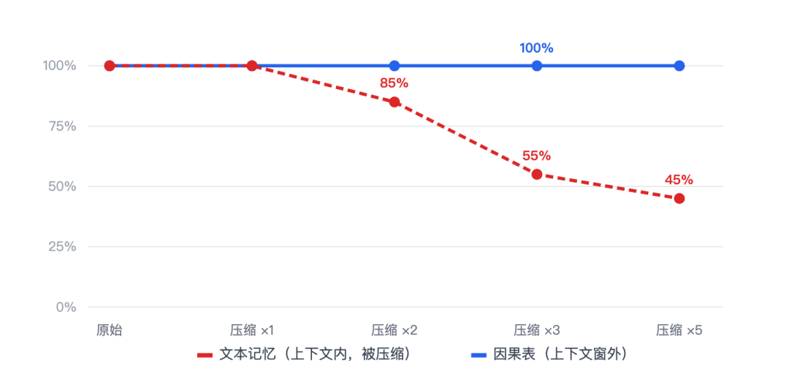
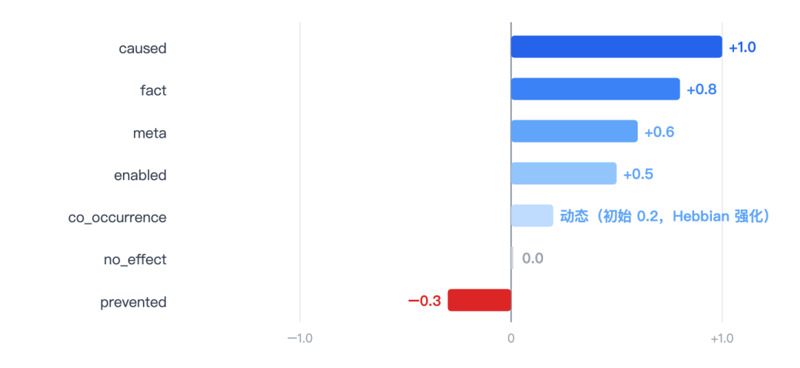
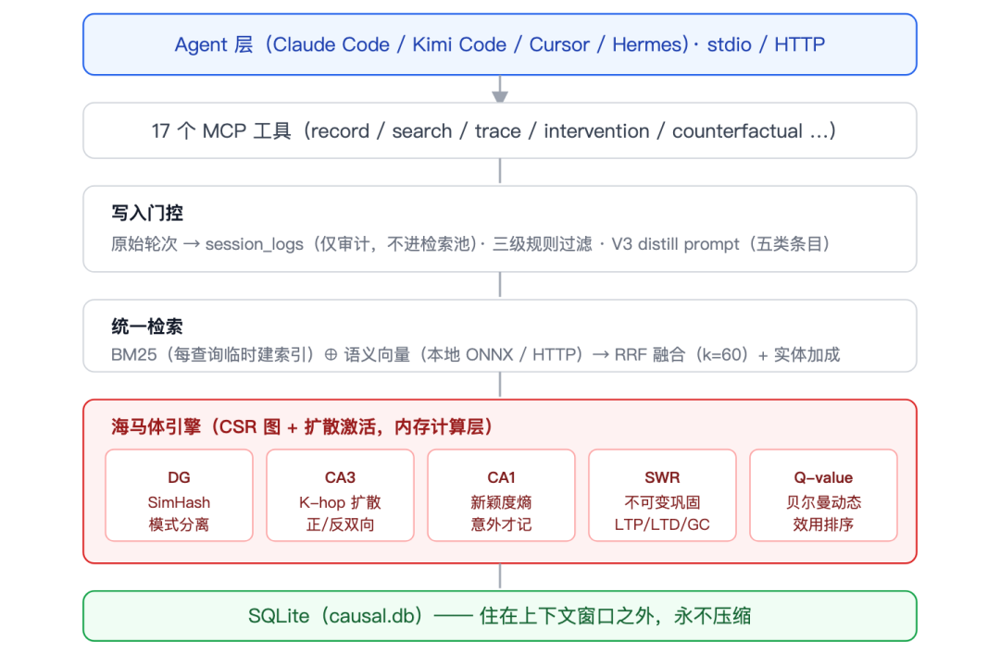
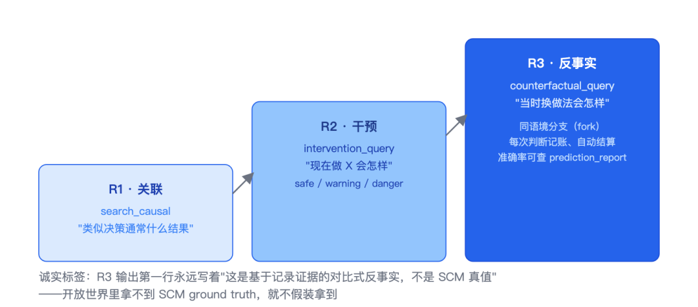
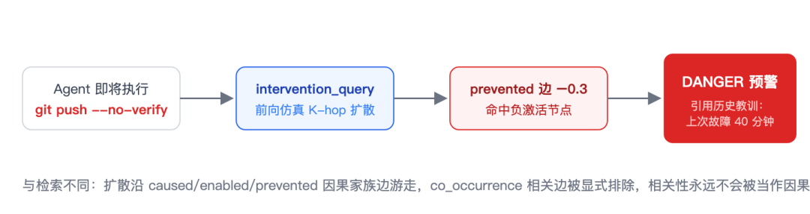
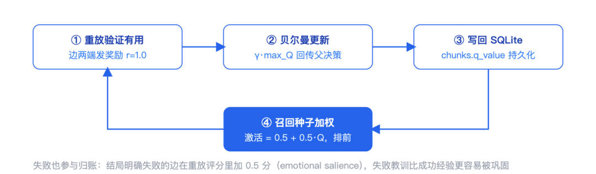
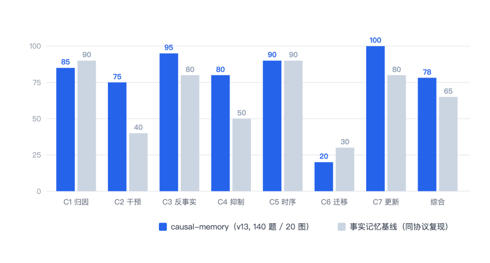
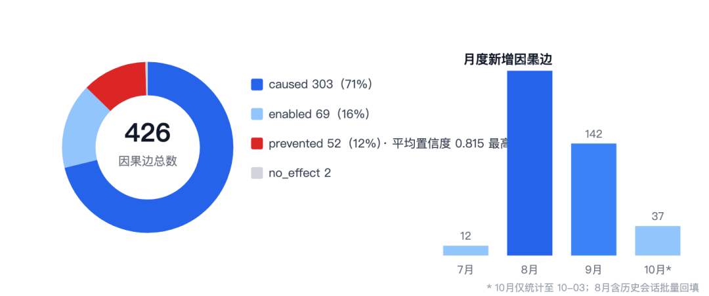

Agent 缺的不是记忆，是“教训”：causal-memory 的设计与实战
来源：微信公众号 归档日期：2026-10-15 抓取状态：成功 原文字符：12577｜配图：8 张
摘要速览
- 用过 AI 编程助手的人对这些场面不陌生：昨天刚踩过的坑，今天换个会话再踩一遍；上周评审否决过的方案，这周原样又提了回来。前两个问题是「忘」，后两个问题是「错」——记错比忘记更麻烦。 缺陷一：上下文压缩会吃掉"当初为什么"。长任务跑到一半，Agent 开始用同样的错误方法反复修同一个 bug。它不是忘了做过什么，是忘了当初为什么那么做、后果是什么。这不是感觉，可以实测：把一段包含因果细节的对话用生产级压缩算法反复压缩，每轮测两类
核心内容
（待补充）
可执行启发
（待补充）
我的想法
（待补充）
原文沉淀
目录
- 3.1 七种边类型：先给因果关系分型
- 3.2 海马体引擎：把脑科学翻译成工程组件
- 3.3 因果三层：顺着 Pearl 的阶梯往上爬
- 3.4 记忆归账：结果怎么回流成"下次排前面"
- 3.5 写入门控：噪声不进场，检索才干净
- 3.6 检索：每查询临时建索引的反直觉选择
- 4.1 五道 refuter：给每条因果边做置信度体检
- 4.2 BiasAudit：给记忆库做统计体检
- 4.3 矛盾主动检索：检索结果里的"反方辩友"
来源：https://mp.weixin.qq.com/s/hsRucmrbY8h98di-rXVzww 平台：weixin｜作者：滴滴技术 抓取方式：cdp｜字符数：13772｜图片：8
一、Agent 的记忆有四个结构性缺陷
用过 AI 编程助手的人对这些场面不陌生：昨天刚踩过的坑，今天换个会话再踩一遍；上周评审否决过的方案，这周原样又提了回来。前两个问题是「忘」，后两个问题是「错」——记错比忘记更麻烦。
缺陷一：上下文压缩会吃掉"当初为什么"。长任务跑到一半，Agent 开始用同样的错误方法反复修同一个 bug。它不是忘了做过什么，是忘了当初为什么那么做、后果是什么。这不是感觉，可以实测：把一段包含因果细节的对话用生产级压缩算法反复压缩，每轮测两类记忆的召回率

图 1 ｜ 压缩 5 轮后，原文里的因果信息只剩 45%（2→3 轮之间断崖式衰退），而因果记忆库一行没丢——它活在上下文窗口之外，压缩算法够不着
缺陷二：踩过的坑换个会话再踩一遍。我们做了一个专门埋重复陷阱的 trap-world 基准：不带因果记忆的系统重复踩坑率 67%，带上之后降到 33%。差别不在模型，在于"决策→结果"有没有被存成能检索的结构。
缺陷三：记忆困在一台机器、一个进程里。Agent 的"经验"存在某个本地目录，换台电脑、换个同事接手，全部归零。团队里"那个坑我踩过"靠口口相传。
缺陷四：记忆自己会劣化，而且没人发现。把"相关"记成"因果"、同一个决策反复记录同一种结局形成回声、失败案例压根没被写下来、互相矛盾的记忆同时排在检索前排——记忆入了库，不等于记忆是对的。这是四个里最难的一个，也是本文后半段的重点。
目前常见的记忆方案主要在解决前三个缺陷。causal-memory 想把四个一起解掉：给 Agent 建一层以「决策 → 结果」因果边为核心、住在上下文窗口之外、并且持续接受体检的记忆系统。
二、相关方向的现状
2025–2026 年，Agent 记忆成了热门方向，学术界和工业界都有不少探索。几条主要路线：
| 方案 | 路线 | 核心机制 |
|---|---|---|
| mem0（arXiv:2504.19413） | 事实抽取 | 从对话动态抽取/整合/检索事实，Mem0g 增加图表示；2026 年转向单遍 ADD-only 抽取 |
| Zep / Graphiti（arXiv:2501.13956） | 时序知识图谱 | episode → 实体/事实（带双时态有效期）→ 社区摘要三层结构 |
| Letta / MemGPT（arXiv:2310.08560） | OS 式内存管理 | LLM 自主管理 core/archival 两级内存，函数调用换入换出 |
| 腾讯 TencentDB Agent Memory（2026-05 开源） | 分层记忆 | L0 原始对话 → L1 原子事实 → L2 场景 → L3 画像逐层蒸馏；符号化短期记忆使 Token 消耗最高降约 61% |
| Anthropic memory tool + Dreaming（2026-05 发布） | 上下文外存储 + 后台巩固 | 文件系统式记忆 + 定时"做梦"进程重组记忆库；Harvey 报告任务完成量提升 6 倍 |
这些路线的重心大多在事实的抽取与召回上，主流基准（LoCoMo、LongMemEval）考的也主要是事实召回——用户的偏好是什么、第几周说过什么。
评测口径的争议也一直存在：Zep 官方曾发文逐条质疑 mem0 的 LoCoMo 成绩（数据集只有 16k–26k token、不测知识更新、评测实现有 role 混淆）；社区里也有"benchmark theatre"的说法，各家自报的分数因裁判模型和检索协议不同而难以直接对比。对读者来说，看分数之前先问评测协议，总是没错的。
比分数更要紧的是：这些基准不考"Agent 有没有从失败里学到东西"。学术界更早开始关注这个问题——CLIN（ICLR 2024）让 Agent 从 action→observation→reward 里提炼因果抽象；MemRL（arXiv:2601.03192）指出被动语义匹配容易检索到噪声，解法是给记忆挂 Q-value 做效用排序；HeLa-Mem（ACL 2026）引入 Hebbian 学习，让一起激活的记忆互相增强。
causal-memory 和 HeLa-Mem 的关系顺便说清：HeLa-Mem 做了记忆的「兴奋侧」，causal-memory 补上了「抑制侧」。完整的记忆既要知道"什么导致了什么"，也要知道"什么阻止了什么再次发生"。
三、核心设计
3.1 七种边类型：先给因果关系分型
causal-memory 把所有记忆统一成一张图上的七种边，每种边在扩散激活时有不同的传播系数（hippocampus/types.rs 的 spread_coeff）：

图 2 ｜ 七种边的扩散系数。
prevented 是唯一的负系数边——生物大脑有兴奋和抑制两种信号，这里把抑制侧补上了
这张词表是因果记忆和事实记忆的分界线。写入时 LLM 必须给每条经验标注关系类型；下游所有因果推演都读它。关键的一条：co_occurrence（共现）专门收留"机制不明、疑似共同原因"的观察——机制没搞清楚的一律记为关联而非因果，链式前向遍历的 SQL 里显式排除它。一条混杂未排除的关联，永远不会以因果预测的身份出现在干预查询结果里。
prevented 是另一端的重头戏。它不是"低分事实"，而是负扩散：Agent 即将采取一个曾经避免过事故的动作时，相关节点以负激活出现在召回结果前列，作为显式警告，而不是沉默地排在队尾。实现上有三个细节：
- 绝对值最大合并。节点激活的合并规则是 abs-max 而不是有符号 max——signed-max 下 −0.126 > 0.0 不成立，负激活永远写不进去。abs-max 让同一节点上 caused（正）和 prevented（负）谁强谁赢。
- 扇出豁免。经典的 Collins & Loftus 扩散模型要求激活按扇出度分流，但这里只对联想通道（fact / co_occurrence）除扇出，因果家族边不除——否则一条“此操作曾阻止生产事故”的边，仅仅因为节点连接多，警告信号就被稀释掉了。
- 消融可验证。引擎留了
disable_inhibition()开关，测试证明：有抑制时“零停机发布”节点以负激活出现（预警生效）；关掉抑制后这个节点彻底消失。预警能力确实来自负扩散，不是别的机制顺带实现的。
3.2 海马体引擎：把脑科学翻译成工程组件
引擎不是工程堆叠，是脑科学 × 因果推断 × 系统工程的交叉。人脑海马体不是硬盘，它有精细分工，代码里逐一有对应实现（hippocampus/mod.rs，模块头注释就是映射表）：

图 3 ｜ 整体架构：写入门控保证检索池干净，海马体引擎负责扩散激活与离线巩固，SQLite 持久层位于上下文窗外
- DG（齿状回）→ SimHash 模式分离：128 位 SimHash，hamming ≤ 2 判定近重复。相似经验不重复记录，防止互相污染。
- CA3 → K-hop 扩散激活：正向 CSR 图（decision→outcome）加反向 CSR 图（归因追溯用），默认衰减 0.7、最深 5 跳；种子激活按 Q 值加权（0.5 + 0.5·Q），被验证好用的经验天然先被点亮。图存储是 CSR + SoA 布局，扩散系数建图时预乘进权重数组；新写入的边走 patch overlay，下次重建时并入。
- CA1 → 新颖度检测：新记忆写入前先对 decision 文本做内部扩散得到“预测结果”，再和实际 outcome 比相似度，surprise 超过阈值才值得记——意外才是最有价值的经验。混合门控模式下，只有落在边界带的样本才付费调 LLM 做语义级判断。
- SWR（尖波涟漪）→ 离线巩固：对齐 Anthropic Dreams 的不可变模式——所有变更（LTP 强化 ×1.05 封顶 2.0、LTD 衰减、三重标准 GC：弱且零重放且 30 天休眠）先算成 delta 应用到 clone 上，原图绝不动，附完整审计日志。
3.3 因果三层：顺着 Pearl 的阶梯往上爬
Pearl 的因果阶梯把智能分三级：观察（我看到了 X）、干预（如果做 X 会怎样）、反事实（当时换个做法会怎样）。事实的存取对应第一级，causal-memory 的工具按三级阶梯补齐：
| 层级 | 工具 | 实际在算什么 |
|---|---|---|
| R1 关联 | search_causal | 从已记录的边算 P(outcome｜相似决策） |
| R2 干预 | intervention_query | 经验式 do-效应：沿相似历史动作的前向链推演，按 task_tag 分层，带Simpson 悖论警告 |
| R3 反事实 | counterfactual_query | 对比式 A/B：两个候选方案各自的实际结局分布 |

图 4 ｜ Pearl 因果阶梯的工程化映射：R1 检索、R2 干预仿真、R3 对比式反事实，逐级上行
反事实这一层值得展开。严格的 Pearl 第三层需要溯因（abduction，基于当时的世界状态做条件化）和机制模型，开放世界里拿不到 SCM 真值——有论文测过（arXiv:2510.01539），强制模型做溯因时分数会掉 25–40 个点。我们的做法是只做工程上能站住的子集：
第一，记录溯因需要的原料。
record_decision 有个 context 参数，记下决策时的环境、约束、关键参数。同样的 task_tag + 同样的 context 指纹 = 同一个世界状态下的不同选择，也就是一次自然实验（存进 decision_forks 表）。设计文档里有句话我很喜欢："a fork pair is evidence about one world; distributions are evidence about many"——成对证据讲的是同一个世界里的两种选择，比跨世界的统计分布硬得多。所以反事实对比时，fork 兄弟边永远渲染在分布证据前面。
第二，每次反事实判断都记账。
counterfactual_query 每出一个结论（prefer_a / prefer_b / no_difference），就往 pending_predictions 写一条待决预测。等现实发生了——新记录的决策文本匹配上某个待决选项——自动结算对错：押了 X、现实走了 X、结局是好，算押对；现实走了对手、对手翻车了，也算押对；结局 mixed 则不计入分母。
prediction_report 随时给出按方法、按领域分层的准确率仪表盘。反事实判断因此是可证伪的，而不是修辞。
第三，证据不足时明说。
真正的 micro-SCM 估计（noisy-OR + EM 拟合）被刻意推迟：同一个领域内攒够 30 个 fork 对才触发，不够就直接回答"不可识别，降级为对比式"。这比硬给一个漂亮数字强。
R2 干预查询是 Agent 动手前的最后一道安检。一次典型调用长这样：

图 5 ｜ 一次干预预警的完整链路：危险动作触发前向仿真，命中 prevented 负扩散边，输出 DANGER 并引用当初记录的事故教训
这道安检经过了带 ground-truth 的合成世界校准：真危险、真安全、被阻止三类场景 100% 判准；而"被混杂伪装"类在修复前 100% 虚报 DANGER——Agent 会因为一条假因果不敢做正确的事。修复就是把机制不明的观察全部降级为 co_occurrence 并在前向链 SQL 里排除，修复后这类虚警降到 0%，写死为回归守卫。
3.4 记忆归账：结果怎么回流成"下次排前面"
记住了"决策→结果"只是第一步。更难的问题是归账（credit assignment）：一堆决策和结果混在一起，谁该为哪个结果负责？被验证有用的经验，下次凭什么排在前面？causal-memory 里有四条归账链路。
第一条，Q-value 贝尔曼回传。睡眠巩固时，被重放验证过的边给两端节点发奖励 r=1.0，跑标准贝尔曼更新 Q ← Q + α·(r + γ·max_Q(邻居) − Q)（α=0.1，γ=0.9）。关键在 γ·max_Q 那一项：结果端的高 Q 会沿因果链回流到父决策——一个决策通向了好结果，它自己的分数也涨。Q 值写回 SQLite 持久化，下次检索时种子激活就是 0.5 + 0.5·Q。一句话：有用的经验下次自动排前，不用人调。

图 6 ｜ 归账回路：验证有用 → Q 值更新并沿链回传 → 持久化 → 下次召回自动排前
第二条，失败显著性。巩固阶段给边打重放分数时，结局明确失败的加 0.5 分、用户反馈来源的加 0.3、别处出现矛盾结局的加 0.2。代码注释里管这个叫 emotional salience——和人脑一样，疼过的记忆更牢。
第三条，影响面归账。每条新决策可以记录 influenced_by——"这个决定受了哪些已有记忆的影响"。等到某条记忆被证伪作废时，系统反查它影响过的所有后续决策，浮出水面供人复查。错误记忆的影响半径是显式的，不是猜的。
第四条，来源分层的时间账。每条边记录发现来源（用户反馈 / LLM 推断 / 时间邻近 / 规则），来源直接决定半衰期档位：用户确认过的经验 90 天半衰期且永不被 GC，LLM 推断的 90 天，纯时间邻近的只剩 7 天。谁说的，决定了这话能活多久。
3.5 写入门控：噪声不进场，检索才干净
很多记忆系统精度不行，锅不在检索，在写入太脏。写入路径有三道闸：原始对话轮次只进审计表 session_logs，永不进检索池；规则过滤分三级——失败必记（40+ 个 error/panic/timeout 标记）、状态变更工具必记、只读工具显式排除，早期版本"每个工具调用都记"曾产出大量 ran cargo build → exit 0 式噪声；最后 LLM 用 130 行的 V3 prompt 提炼五类条目（fact / preference / lesson / event / causal），其中 causal 类用对照 few-shot 严防 caused 和 prevented 混淆——"加了重试之后超时消失"是 PREVENTED 不是 CAUSED。
3.6 检索：每查询临时建索引的反直觉选择
检索是 BM25（k1=1.2, b=0.75）与语义向量（本地 ONNX bge-small，或 HTTP 嵌入，没配置就优雅降级纯 BM25）经 RRF 融合。一个反直觉的选择：每查询临时重建 BM25 索引，不维护全局索引。候选集通常数百到数千条，重建只要微秒，换来的是按 task_tag 过滤后的子语料上 IDF 统计精确——过滤完再算词频，和不过滤直接查全局索引，结果可能完全不同。
四、记忆治理：入库之后，谁保证它是对的
回到开头的缺陷四。记忆入库 ≠ 记忆是对的。提炼模型会犯几种系统性错误：看到"改了 A 之后 B 也变了"就记一条 A→B（可能背后有共同原因 C，这是伪因果）；同一个决策反复记录、结局永远相同（记忆在回声，不在跟踪世界）；某类任务记下来的几乎全是好结果（失败根本没被写下来）；互相矛盾的记忆同时排在检索前排，谁也不提醒谁的存在。
causal-memory 的做法是给引擎加一条治理横切面，核心原则一句话：系统只标注、不静默裁决——所有可疑结构标出来给人审查，记忆库永远不替人删历史。
4.1 五道 refuter：给每条因果边做置信度体检
借鉴 DoWhy 的反证框架，但 Agent 记忆图上跑不了统计检验，于是全部换成图结构检验。每条有效边过 5 道测试，综合打 A–F 级：
| # | Refuter | 检验逻辑 | 抓什么 |
|---|---|---|---|
| 1 | confounder | 两端邻居集合的 Jaccard 重叠 | 真因果边共享上下文；零重叠 = 疑似伪相关 |
| 2 | corroboration | 去掉该边后的替代路径计数 | 真关系有冗余证据；孤立单边可疑 |
| 3 | placebo | 随机节点替换源点做可达性测试 | 真边有激活特异性；随便换个节点也能到 = 不特异 |
| 4 | backdoor | 公共祖先能否绕过该边到达终点（底层是精确 d-分离判定） | "A→B"其实被共同原因 C 完全解释 |
| 5 | temporal | 因的 event_time 必须早于果 | 果先于因 = 时序上不可能，伪边铁证 |
这些阈值不是拍脑袋的，是校准出来的——每个阈值背后都有一次"合成 ground-truth 世界"实验。举两个校准期的真实战例：corroboration 里"无替代路径即判伪"这一支被直接砍掉，因为最小 DAG 链本来就不可冗余，它曾误杀 38% 的真边；backdoor 坚持绝对计数阈值而不是密度归一化，因为稠密图里祖先路径几乎连通所有节点，归一化版本同样误杀 38% 真边。temporal 是唯一近乎零误杀的信号，加入后伪边标记率从 35.7% 提到 64.3%，真边保留率纹丝不动。
4.2 BiasAudit：给记忆库做统计体检
睡眠巩固的第五个阶段是三个纯观测检测器：
- 极性偏斜：某个领域已知结局 ≥90% 是同一方向（至少 5 个样本）就盖章。13 个样本只有 1 个反对，在公平过程下是约 0.2% 的小概率事件——要么这个领域真的顺，要么失败根本没被记录。
- 零方差重复：同一决策记录 ≥3 次、结局极性次次相同，自我强化嫌疑。
- 置信度漂移：最近 20 条边的平均置信度和历史均值偏移 ≥0.15，只报告不盖章——没有单条边该负责，这是提炼模型最近的系统性偏差。
被盖章的边进人类审查队列。检索、衰减、GC 全部刻意忽略这个标记——它和软作废是同一个哲学：系统只标注，不裁决。
4.3 矛盾主动检索：检索结果里的"反方辩友"
search_causal 带 explain=true 时，检索完正信之后主动追加一段矛盾历史：取候选池里排位最高的带极性条目当"当前信念"，把极性相反的历史条目以 [contradiction] 标签附上。同一个问题的两面同时摆上台面，"记忆自相矛盾"从沉默风险变成显式信息。
五、评测：自己出一份考卷
公开基准考不了因果能力，所以项目自带了一份考卷 CausalEval：因果图即答案键。先确定性生成类型化 DAG，再由 LLM 把图叙事化成对话，标准答案直接从图结构推导，零人工标注。结果如下图，灰色是同一协议下不带因果结构的事实记忆基线：

图 7 ｜ CausalEval v13 七个维度的自评结果（项目内部基准，仅供参考）。C2 干预、C4 抑制、C7 更新是相对基线提升最多的维度；C6 跨任务迁移是目前最弱的维度
公开的事实召回基准（LoCoMo、LongMemEval-S）我们也跑了对照实验，能到可用水平，但那不是这套系统的主攻方向，具体数据以仓库评测页为准。另外提醒一句：各家基准的裁判模型和检索协议差异很大，这类分数建议都当"自报数据"看待——包括我们自己。
两组更贴近实际价值的实验：压缩存活（图 1 的数据来源，5 次压缩后文本 45%、因果表 100%）；trap-world 重复犯错率 33% vs 无记忆对照组 67%。
六、实战：一个真实记忆库的两个多月
评测之外，我自己日常研发的 Agent 一直挂着 causal-memory。下面是这个真实数据库（2026-07-27 至 2026-10-03，只读统计）的全貌：
426 条因果边、817 个记忆节点、2901 条事实、56 条跨任务 meta 边。边的分布：caused 303（71%）、enabled 69（16%）、prevented 52（12%）。有个分布细节值得注意：prevented 类的平均置信度最高（0.815）——"避免事故"的教训被记得最牢，写入时系统也最有把握。

图 8 ｜ 真实记忆库画像：426 条因果边的类型分布（左）与月度增长（右）
复用情况有硬数据：46% 的因果边被召回过 6 次以上。最典型的一条是"GitHub 直连不通时用 git -c http.proxy 走系统代理"——两个月里被复用了 4 次，每次都有新边记录"又复用了同一方案"。被召回最多（19 次）的是一条 Go toolchain 缓存路径的工程细节。
两个我自己印象最深的故事：
“ 一次被阻止的生产事故（prevented · 置信度 0.95） 某存储服务多租户改造，Agent 记录下"新二进制先对租户库副本跑漂移验证，确认后再换容器"。副本验证直接暴露了一个迁移 FK bug——避免了生产 9 个租户库全部打不开的事故。修复后全量迁移零失败。
“ "没查记忆，多花 20 分钟"（元教训 · negative） 一次 GitHub 443 端口完全不通，Agent 没有先查因果记忆，手写脚本走 REST API 绕推，多花约 20 分钟；事后发现代理方案在记忆里已经被验证过两次，一行命令就能解决。这条边让我们定下一条纪律：网络/部署类操作前，先 search_causal。
意外也被如实记录过。distill 链路曾经整体失效，查下来是上游模型静默升级，V3 prompt 在新模型上陷入重复循环。这条边以 0.4 的低置信度入库，如实标注"这是负面意外结果"，后来直接促成了一条工程纪律：prompt 必须按当前模型重新校准。
也得说实话：这个库同样暴露了短板。写时门控的 session_logs 没启用，Hebbian 共现边只积累了 6 条且权重从没涨过，召回审计功能 9 月才上线、只有 12 条记录，决策分叉表还是空的。机制都落地了，但有几个能力还没攒够有统计意义的实战样本。
七、工程化：一个人也能维护的记忆层
整个系统是 Rust 写的单二进制：MCP server（stdio + Streamable HTTP）、离线 session 提取 CLI（extract / judge / reasoning / distill 四档成本可选）、睡眠巩固、基准 harness，全在一个文件里。几个工程决策值得单独说：
- git 式快照同步，语义完全自实现。commit 是内容寻址的 sha256 对象，换机器
clone一次恢复完整上下文，checkout回滚任意快照；单写者假设下不需要 merge 算法。第一目标不是团队共享，是上下文灾备——Agent 跑到哪，记忆跟到哪。团队共享是自然延伸：多台 AI 工具挂同一个共享远端，纠错状态随 pull 全员对齐，新人一次 clone 继承全组历史。
- 多租户 HTTP：token 映射租户，每租户独立 SQLite 惰性打开，配置热重载、损坏时 fail-closed。团队级共享记忆中心的部署形态。
- 可观测性：Prometheus /metrics，
/debug/recall返回每次召回的完整 trace（种子、逐跳摘要、逐结果溯源）。记忆系统的召回过程本身必须可调试。
- 生态接入：Claude Code / Cursor / Kimi Code / Codex 走 MCP + skill；PyO3 Python 绑定与 17 个 MCP 工具一一对应；另有 Hermes 和 DeepSeek Harness 的原生插件。
- 测试：HEAD 实测 460+ 个测试，覆盖 16 个设计层的端到端验证；校准 harness（合成 ground-truth 世界）全部开源在仓库里。
八、一个延伸视角：自我改进的地基是记忆
最近 RSI（Recursive Self-Improvement，递归自我改进）的讨论不少：ICLR 2026 开了相关 workshop，工业界和开源社区都有项目在探索让 Agent 越用越强。有个定义比较干净：系统改变自身的持久组件，评估这个改变，再用改进后的流程跑下一轮。
拆开看是三个环节：改持久组件、评估、循环。每个环节都值得问一句。
改哪个组件？按风险和成本排：改权重最贵最险，改自身代码次之，改 prompt、工具策略便宜一些，而改记忆是成本最低、今天就能做的一层——不动模型、不动代码，只让"下次调用时的经验排序"变得更好。causal-memory 的睡眠巩固加 Q 值归账，本质上就是一个记忆层的最小闭环：行动 → 记录结局 → 归账更新排序 → 下次行动用到新排序 → 再记录。循环已经跑起来了，只是改的东西是记忆而不是权重。
评估信号从哪来？每个自改进循环，本质上都在声称"某种评估信号可以替代人类判断"，这个信号不能凭空来。causal-memory 里有三样东西在造它：结局极性判定（这次成了还是败了）、Q 值贝尔曼回传（好结果沿因果链给决策加分）、预测账本（反事实判断自动结算准确率）。没有这层归账，"改进"就只是"变化"——系统变了，但没人知道是变好了还是变坏了。
循环怎么不退化？这是最少人提的一点。没有持久记忆的自我改进会原地打转：上一轮改了什么、效果如何，下一轮全忘了，同样的错误改法反复出现；更糟的是回声式劣化——自己产生的记录不断强化自己。第四章的治理机制放在这个语境下再看就有新含义：BiasAudit 的零方差重复检测，防的是"自我改进变成自我重复"；置信度漂移检测，防的是"评估信号本身悄悄变质"。
所以 causal-memory 在这件事上的位置，我们放得比较低：它不承诺让 Agent 自己变成更强的模型，只是让 Agent 的每一次"改"都有据可查、有账可算、有坑可避。
九、局限与展望
系统目前还是 alpha（v0.9.3），未竟之事写明白：C6 跨任务迁移只有 20%，跨领域的经验类比还是最难的开放问题；干预查询的准确率基准设计好了还没跑完；缺 7×24 生产环境的长周期验证；Hebbian 共现、决策分叉在真实流量下还没形成规模。
后续有几个明确的方向：把 session 级的快照与恢复补上，让上下文灾备形成闭环（换机器、换工具都能带走完整记忆）；从反复成功的决策模式里蒸馏可复用的 skill 文件，从 prevented 边里沉淀"禁止事项"；做更主动的记忆保鲜——过期轮换和陈旧度检测，让"这条经验还新吗"成为可查询的属性。企业场景里也有自然的落地处：运维 Agent 的故障复盘记忆（每次处置的 decision→outcome 自动沉淀，同类故障不二次踩坑）、研发团队的共享记忆中心、客服运营里"什么动作曾引发客诉"的抑制性预警。
“ 记忆这件事，目标不是让 AI 记住所有事，是让人不必重复所有坑。
参考与链接
- 项目仓库（Apache-2.0）：github.com/JingxuanC/causal-memory
- mem0：arXiv:2504.19413
- Zep / Graphiti：arXiv:2501.13956；Zep 对 LoCoMo 评测的质疑：getzep.com/blog（2025-05）
- MemGPT：arXiv:2310.08560
- CLIN：arXiv:2310.10134（ICLR 2024）
- MemRL：arXiv:2601.03192
- HeLa-Mem：arXiv:2604.16839（ACL 2026）
- Executable Counterfactuals：arXiv:2510.01539
- ICLR 2026 Workshop on AI with Recursive Self-Improvement；awesome-rsi 资源库
- 腾讯 TencentDB Agent Memory：github.com/TencentCloud/TencentDB-Agent-Memory（2026-05 开源）
- Anthropic：Effective context engineering for AI agents（anthropic.com/engineering）；Dreaming（Code with Claude, 2026-05）
- LoCoMo（ACL 2024）、LongMemEval：arXiv:2410.10813（ICLR 2025）
归属：[[02-输入/按主题/AI与效率/_index|AI与效率]]